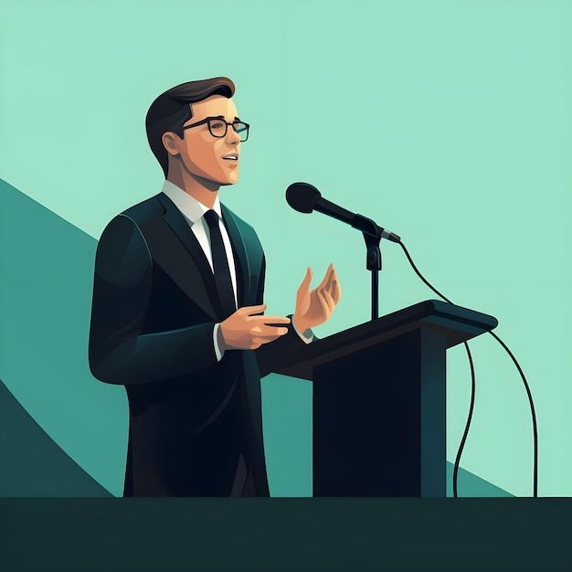
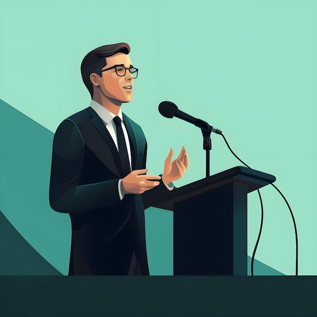
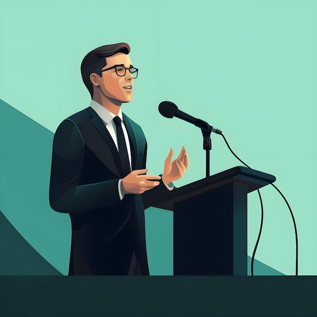

Galerie Photos

 



La communauté officielle qui soutient ses actions et son impact.
Eldaa Koama est une entrepreneure visionnaire engagée dans l’innovation et le leadership féminin. Ragnimwendé Eldaa Koama force l’admiration et le respect de par son talent d’oratrice, de coach, de formatrice et de maîtresse de cérémonie bilingue. Ingénieure de conception des systèmes informatiques, elle a remporté plusieurs prix en art oratoire au Burkina Faso et à l’international. Elle est celle qui, en s’adressant au Président Emmanuel Macron lors du sommet Afrique-France en 2021, a imagé les relations France-Afrique de marmite sale. Egalement fondatrice de IMPROV’YOU & In Gold Letters elle se distingue par son approche innovante de l’art oratoire et du développement personnel. Eldaa Koama est aussi auteure de plusieurs ouvrages dont le best-seller « Prends ta place ».
partage,projet communautaire,benevolat

Mission : Inspirer et mobiliser des membres motivés pret a tout moment
Vision : Créer une communauté engagée et solidaire preorisant le soutient a Eldaa koama sous toutes formes .Ainsi nous avons mis en place une page Facebook denommee EKFC(Fan Club Eldaa KOAMA)qui aura pour but de satisfaire cet objectif